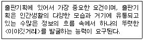

전자출판기능사 (2003-10-05 기출문제)
1과목: 출판론
1. 아닐린인쇄라고도 하며 주로 골판지, 종이백, 포장인쇄분야에서 널리 사용되고 있으며, 환경오염 또한 적은 인쇄 방식은?
- 그라비어 인쇄
- 플렉소그래피 인쇄
- 스크린 인쇄
- 드라이 오프셋 인쇄
(정답률: 70%)

2. 일반적인 스크린 인쇄방식을 가장 옳게 설명한 것은?
- 잉크가 인쇄판을 통과하여 피인쇄체에 화상이 전이되는 방식
- 오목한 화선부에 잉크가 묻어있고 압통으로 인압을 가하면 피인쇄체에 상이 전이되는 방식
- 볼록한 곳에 화선부를 구성하고 이곳에 잉크를 묻혀 압을 가하여 인쇄하는 방식
- 화선부와 비화선부가 평면상에 구성되어 있어 물과 지방의 반발력을 이용한 인쇄 방식
(정답률: 54%)
3. 일반적으로 인쇄에서 농담은 무엇으로 나타내는가?
- 선의 수
- 인쇄판의 크기
- 망점의 크기
- 안료의 밀도
(정답률: 72%)
4. 여러 가지 금속들의 물과 기름에 대한 친화성의 강약을 이용한 것으로 내쇄력을 높이기 위해서 고안된 제판법은?
- 난백판
- 와이프온판
- PS판
- 다층판
(정답률: 29%)
5. 표지를 제외한 모든 속장을 실로 꿰매고, 정해진 규격으로 재단한 다음, 둥근등이나 모등으로 튼튼하게 굳혀 천과 면지의 힘으로 두터운 합지를 쓴 표지에 붙여 만드는 제책방식은?
- 반양장
- 양장
- 중철
- 호부장
(정답률: 80%)
6. 양장 제책에서 표지의 여는 쪽 위아래에 가죽이나 클로스 등을 세모꼴로 붙여 튼튼하게 하거나 장식의 효과를 주는 것을 무엇이라 하는가?
- 책귀
- 면지
- 돋음띠
- 귀발(받)이
(정답률: 78%)
7. 출판기획 전략 구성과 가장 거리가 먼 것은?
- 어떤 출판물을 만들 것인가에 따른 뚜렷한 목표설정
- 출판물을 이룩하는 데 가장 적합한 저자 선택
- 출판물의 조성 방법, 원가계산, 정가책정, 광고, 판매방법 등 구체적 입안
- 사회적, 문화적 유산의 전달기능 수집
(정답률: 70%)
8. 출판기획 수립시 고려해야 할 출판의 외적환경에 속하지 않는 것은?
- 자금융통능력
- 국가안보에 저촉되는 내용
- 저작권법상의 권리침해
- 도서잡지 윤리강령위반 내용
(정답률: 78%)
9. 기업에서 일상적으로 처리하는 주문서, 송장 등과 같은 기업 간의 상거래 정보를 종이로 된 문서나 전표 대신에 컴퓨터가 처리할 수 있는 표준화된 형태와 코드체계를 이용하여 컴퓨터 간에 전자적인 전송수단을 통해 교환하는 시스템을 무엇이라 하는가?
- ISBN(International Standard Book Number)
- EDI(Electronic Data Interchange)
- DOI(Digital Object Identify)
- VAN(Value Added Network)
(정답률: 67%)
10. POS 시스템이란 판매시점 정보관리시스템이라고 한다. 서점용 POS 시스템의 특징으로 가장 올바른 것은?
- 점포가 필요로 하는 상품정보를 신속하게 파악할 수 없다.
- 인기상품을 파악하여 상품 진열의 합리화를 기하고 품절을 방지한다.
- 판매 데이터만으로는 앞으로의 판매 동향을 전혀 예측하기가 어렵다.
- 스캐너의 도입으로 작업능력은 향상되었지만 담당 점원에 대한 교육시간이 길어져 노동력 단축에 도움이 되지 않는다.
(정답률: 72%)
11. 다음 중 출판물 제작 공정으로 가장 알맞는 것은?
- 기획→원고입수→입력→편집→출력→제판→인쇄,제책
- 원고입수→기획→편집→입력→제판→출력→인쇄,제책
- 기획→원고입수→입력→편집→제판→인쇄,제책→출력
- 원고입수→기획→입력→편집→제판→인쇄,제책→출력
(정답률: 58%)
12. 출판의 기능 중에서 다른 미디어가 추종할 수 없는 출판미디어가 가지고 있는 탁월한(특수한) 기능은?
- 문화의 연계기능
- 문화의 동원기능
- 문화의 단절기능
- 문화의 보전· 전달기능
(정답률: 84%)
13. 다음은 출판기획의 어떤 요건에 대한 설명인가?

- 창의성
- 적의성
- 적시성
- 채산성
(정답률: 64%)
14. 색상, 명도, 채도를 3차원 공간 속에 계통적으로 정리한 것을 무엇이라 하는가?
- 색입체
- 색상면
- 색상환
- 그레이 스케일(Gray Scale)
(정답률: 80%)
15. 다음 중 서로 보색관계에 있는 색은?
- 연두(GY) - 파랑(B)
- 노랑(Y) - 녹색(G)
- 보라(P) - 파랑(B)
- 빨강(R) - 청록(BG)
(정답률: 83%)
16. 먼셀의 명도 5, 색상 5Y, 채도 10인 색의 표기법으로 가장 옳은 것은?
- 5/5Y 10
- 5Y 5/10
- 10/5Y 5
- 5 5Y/10
(정답률: 91%)
17. 잡지와 서적의 합성어로서 서적이면서도 저널한 성격을 지니고 있으며 많은 소재를 모아 편집하였고 광고가 있으며 다채롭게 레이아웃한 점이 잡지와 비슷하나 발행방식이 정기적이 아니라는 점이 특징인 것은?
- 총서(叢書)
- 무크(mook)
- 문고(文庫)
- 전집(全集)
(정답률: 87%)
18. 알루미늄판에 모랫발을 세워서 양극산화로 표면을 처리한 후 감광액을 도포한 판은?
- 와이프온판
- 난백판
- PVA판
- PS판
(정답률: 62%)
19. 스크린 인쇄판을 노광 후 현상할 때 판의 비화선부 일부가 벗겨져 나가는 원인과 가장 거리가 먼 것은?
- 노광 부족
- 노광 과다
- 감광액이 두껍게 도포
- 불량한 감광액의 사용
(정답률: 70%)
20. 제책을 하는 목적과 가장 관계가 없는 것은?
- 인쇄된 종이를 흩어지지 않게 한다.
- 잉크의 전이를 좋게 한다.
- 문화를 기록, 보존하기 위함이다.
- 읽기에 편리하도록 하기 위함이다.
(정답률: 86%)
2과목: 전자 출판
21. DTP 시스템을 구축하는 데 가장 불필요한 장비는?
- 스캐너
- RIP
- 편집 소프트웨어
- 전산사식기
(정답률: 85%)
22. 주로 글씨나 그림, 사진, 필름 등의 이미지나 문서를 디지털 신호로 변환하여 컴퓨터에 전송하는 입력 장치는?
- 태블릿
- 스캐너
- 레코더
- 디지털 카메라
(정답률: 81%)
23. 다음 중 인쇄매체와 비교하여 전자출판물의 특징이 아닌 것은?
- 멀티미디어 기능을 제공한다.
- 정보를 해독할 수 있는 장치가 필요하다.
- 보관이 용이하다.
- 제작 비용이 많이 든다.
(정답률: 82%)
24. 다음 중에서 전산편집 작업에 가장 많이 이용되고 있는 프로그램은?
- Quark-Xpress
- 한글 2002
- FrontPage
- 파워포인트
(정답률: 87%)
25. 다음 중에서 전자출판물이 아닌 것은?
- 전자사전, 전자교과서
- 시디롬(CD-ROM) 잡지
- 비발디의 4계 오디오 시디(music CD)
- 초롱이의 한글 모험 시디롬(CD-ROM)
(정답률: 84%)
26. 레이저 광선을 통하여 정보를 인식할 수 있는 CD-ROM을 출판에 이용할 경우 장점이 아닌 것은?
- 문자정보 뿐만 아니라 소리, 동영상까지도 표현 할 수 있다.
- 교육용과 아동용 책 또는 백과사전과 같은 출판에 적당하다.
- 기존의 책에 비해 가격이 저렴하고, 보관을 위한 많은 공간이 필요하지 않다.
- 저장능력이 뛰어나 음향이나 영상 같은 정보를 거의 무한정하게 담을 수 있다.
(정답률: 67%)
27. 글자 크기를 재는 단위 체계가 아닌 것은?
- 포인트
- 파이카
- 비트
- 급
(정답률: 45%)
28. 다음 중 종이책 출판을 목적으로 하는 경우는?
- WEBZINE
- CD-I
- e-book
- DTP
(정답률: 72%)
29. 다음 중 일반적으로 저장 능력이 가장 뛰어난 매체는?
- 음악용 CD
- CD-ROM
- FLOPPY DISK
- DVD-ROM
(정답률: 72%)
30. 전자출판물인 CD-ROM 제작과정에 있어서 안내지도(MAP, SITE MAP)에 의한 검색 방법의 가장 큰 장점은?
- 시간 흐름 순으로 자료를 검색해 볼 수 있다.
- 방대한 정보인 경우 독자가 방향을 상실하는 것을 막아준다.
- 정보를 신속하게 수정, 변경할 수 있으며 타임라인 이라고도 한다.
- 멀티미디어를 지원하며 일반적으로 많이 사용되는 방식이다.
(정답률: 60%)
31. 일반적으로 휴대용 전자 영어사전은 다음 중 어느 분야에 속하는가?
- 전자 통신 출판
- 전자출판물
- 인터넷 출판
- 전산편집(종이책)
(정답률: 66%)
32. 전산편집 시스템에서 가장 필요로 하는 기기를 다음 중에서 고른다면?
- 컴퓨터용 스피커
- 디지털 카메라
- 캠코더
- 프린터
(정답률: 80%)
33. 전자출판물에서 각 화면이 어떻게 구성되고 어떻게 흘러갈 것인지를 모두 기록해 놓은 것을 무엇이라 하는가?
- 인터페이스
- 텍스트
- 스토리보드
- 스크립트
(정답률: 87%)
34. 전자출판물을 종이책과 비교할 때 가지는 특성이 아닌 것은?
- 문자뿐 아니라 소리, 그림, 영상, 애니메이션 등의 복합적 표현이 가능하다.
- 언제, 어디서나 쉽게 이용할 수 있어 편리하다.
- 작은 크기에 많은 양의 데이터를 수록할 수 있다.
- 정보의 공유력이 뛰어나다.
(정답률: 64%)
35. 다음 중 디지털데이터의 장점으로 볼 수 없는 것은?
- 컴퓨터를 활용한 데이터베이스를 구성하기가 쉽다.
- 정보를 전송하거나 복제시 정보의 손실이 없다.
- 아날로그 신호를 디지털 신호로 변환할 때 정보의 용량이 감소한다.
- 정보검색이 편하다.
(정답률: 69%)
36. 다음 중 입력장치에 해당되지 않는 것은?
- 스캐너
- 마우스
- 키보드
- 모니터
(정답률: 86%)
37. 텍스트, 이미지, 동영상, 음성 파일 등에 특정한 코드값을 붙여 불법 복제를 추적할 수 있도록 한 디지털 문서 식별자 체제는?
- Book Mark
- Tag
- DOI
- ISBN
(정답률: 71%)
38. 전자출판물을 다른 일반 정보와 구분하는 요건이 아닌 것은?
- 검색 기능이 있어야 한다.
- 등록된 출판사에서 발행되어야 한다.
- 독자가 내용을 임의로 변경하여 저장할 수 있어야 한다.
- 문자 등의 정보가 포함되어 있어야 한다.
(정답률: 92%)
39. 문서 레이아웃이나 해상도를 화면상에서 그대로 유지하고자 하는 신문, 잡지, 단행본, 카탈로그 등의 디지털 문서에 유용하게 활용할 수 있는 정보 표현 포맷은?
- HTML
- XML
- DOI
(정답률: 91%)
40. 전산편집 작업 과정의 흐름이 올바르게 연결된 것은?
- 편집소재 확보 → 편집 → 기본틀 작성 → 필름 출력→ 프린트 교정 → 출력 데이터 정리
- 편집소재 확보 → 필름 출력 → 기본틀 작성→ 프린트 교정 → 편집 → 출력 데이터 정리
- 편집소재 확보 → 기본틀 작성 → 편집 → 프린트 교정 → 출력 데이터 정리 → 필름 출력
- 편집소재 확보 → 편집 → 프린트 교정 → 기본틀 작성 → 출력 데이터 정리 → 필름 출력
(정답률: 61%)
3과목: 전산 편집
41. 전산편집된 내용을 프린트를 통해 교정을 할 때 프린트 교정의 요소와 가장 거리가 먼 것은?
- 틀리거나 에러가 발생한 문자의 교정
- 색상의 교정
- 면주와 쪽 숫자의 교정
- 용지의 백색도, 평활도 교정
(정답률: 65%)
42. 저작권법이란?
- 저작자의 권리를 보호하기 위하여 만들어진 법
- 저작물 이용자를 위하여 만들어진 법
- 출판사의 이익을 보호하기 위한 법
- 출판자의 저작물 이용을 돕기 위한 법
(정답률: 85%)
43. 문자의 지정과 관련된 설명으로 적절하지 않은 것은?
- 사진을 설명하는 글자는 본문이나 제목보다 크게 정하는 것이 좋다.
- 유아나 노인층을 대상으로 하는 책에는 서체나 행간의 크기를 넓게 쓴다.
- 본문 서체는 제목 등의 서체와 구분되는 것이 좋으며 명조 계통을 쓰는 것이 무난하다.
- 독자의 이해를 돕기 위한 주석이나 일러두기는 본문 글자보다 적게 하는 것이 보통이다.
(정답률: 86%)
44. 다음 전산 조판 글자체 중 같은 크기일 경우 가장 가는 굵기를 가진 글자체는?
- 표제고딕체
- 중고딕체
- 세고딕체
- 태고딕체
(정답률: 72%)
45. 문서 작성시 일반적으로 적용되는 원칙에는 금칙처리가 있다. 다음 중 행두금칙문자에 속하는 것은?
- ☎
- {
- ?
- [
(정답률: 73%)
46. 잡지 출판에 있어서 본문 중에 별도의 종이를 삽입하여 제책하려고 한다. 종이 삽입 위치를 선정하는 방법으로 가장 옳은 것은?
- 대수와 대수 사이
- 광고와 본문 사이
- 10쪽 단위로 나누어지는 곳
- 20쪽 단위로 나누어지는 곳
(정답률: 59%)
47. 다음은 문자 편집에 있어서 금칙 사항에 관한 내용이다. 맞는 것은?
- 문장의 끝에 붙는 괄호 )는 행의 맨 앞에 올 수 없다.
- 문장 중에 붙는 쉼표는 행의 맨 앞에 올 수 있다.
- 전화번호 숫자는 중간에 끊어서 행을 바꾸지 못한다.
- 영어 단어는 중간에 끊어서 행을 바꾸지 못한다.
(정답률: 73%)
48. 우리나라에서 출판물에 사용되는 4x6전지의 크기는?
- 636×939 mm
- 788×1,091 mm
- 755×1,⑤1 mm
- 766×1,031 mm
(정답률: 56%)
49. 편집에서 사용되는 캡션(Caption)의 가장 정확한 의미는?
- 그림이라는 뜻이다.
- 사진과 그림 등을 설명하는 짧은 문장이다.
- 본문을 장식하는 문자의 한 요소이다.
- 다이어그램을 설명하는 글이다.
(정답률: 84%)
50. 자간에 대한 설명으로 알맞지 않은 것은?
- 낱글자와 낱글자 사이의 간격이다.
- 독서 속도에 영향을 준다.
- 수평모음과 수직모음의 적용에 따라 자간의 느낌이 달라진다.
- 낱글자 간의 간격이 좁을수록 독서 속도는 빨라지므로 좁을수록 유리하다.
(정답률: 83%)
51. 다음 중 단행본 표지를 디자인 할 경우 유의해야 할 사항이 아닌 것은?
- 책등의 폭길이는 책두께를 정확하게 예측해야 한다.
- 앞, 뒷날개의 폭은 앞, 뒷면 폭의 1/3 이하가 가장 적당하다.
- 앞면과 뒷면의 디자인은 5mm 정도 더 크게 해 절단시 꼭 맞거나 부족하지 않도록 한다.
- 책디자인, 책제목, 저자명, 출판사명 뿐 아니라 책 내용의 정수에 해당되는 목차나 저자사진을 함께 싣는 것도 좋다.
(정답률: 59%)
52. 글자의 크기가 10포인트(point)인 정체의 가로, 세로 길이는 얼마인가?
- 2.50mm×2.50mm
- 3.51mm×3.51mm
- 4.14mm×4.14mm
- 6.18mm×6.18mm
(정답률: 70%)
53. 잡지나 일반 인쇄물에서 일반적으로 직사각형의 사진이 많이 사용되는 이유와 가장 관련이 없는 것은?
- 사진이 들어갈 수 있는 지면의 크기를 쉽게 계산 할 수 없기 때문에
- 축소나 확대가 편리하기 때문에
- 직사각형의 사진형태에 익숙해져 있기 때문에
- 문자의 양에 따라 지면을 쉽게 채울 수 있기 때문에
(정답률: 44%)
54. 원고와 대조하면서 문자, 기호, 사진, 그림, 색, 선 등에서 원고와 틀리거나 지정한 대로 되어 있지 않은 것을 골라내어 바로잡는 것을 무엇이라 하는가?
- 제판
- 교정
- 재배치
- 레이아웃
(정답률: 86%)
55. 국판책자의 크기로 알맞은 것은?
- 148×210 mm
- 210×297 mm
- 128×182 mm
- 182×257 mm
(정답률: 69%)
56. 본문의 주목 효과를 높이기 위해 첫글자를 크게 한 것을 무엇이라 하는가?
- 헤드라인(headline)
- 이니셜(initial)
- 리드(lead)
- 놈보르(nombre)
(정답률: 44%)
57. 사진이나 그림은 인쇄물의 시선을 끌어들이는 강한 작용을 한다. 컬러인쇄물에 있어서 사진원고 선택시 다음 중 가장 부적당한 원고는?
- 슬라이드 필름
- 인화된 컬러사진
- 포지티브 필름
- 인쇄된 컬러사진
(정답률: 52%)
58. 잡지의 분류 방법에 대한 예가 올바르지 않은 것은?
- 발행 기간에 의한 분류 : 주간지, 월간지, 격월간지, 계간지
- 영리성에 의한 분류 : 유가지, 무가지
- 형태에 의한 분류 : 4x6판형, 국판형, 4x6배판형, 국배판형
- 내용에 의한 분류 : 일반대중지, 여성지, 학습지, 특수지, 사보
(정답률: 50%)
59. 사진 화면의 효과를 높이기 위해 사진의 불필요한 부분을 없애거나 필요한 부분을 확대, 또는 축소하여 인쇄 치수에 맞게 사진 사이즈를 정하는 작업은?
- 레이아웃
- 트리밍
- 컷팅
- 소부
(정답률: 85%)
60. 일반적인 잡지와 신문의 다른 점에 대한 설명으로 맞는 것은?
- 신문은 접는 형식인데 비해, 잡지는 제책(binding) 형식을 취한다.
- 신문의 내용은 잡지보다 다양하고 상세하다.
- 신문의 판형은 잡지와 같거나 소형이다.
- 신문의 발행 간격은 잡지보다 대체로 길다.
(정답률: 84%)